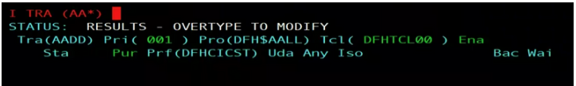
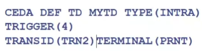

¿Qué es un
Programa de CICS? Es un conjunto de programas que forman una operación de negocio.
Para entrar al
CICS, hay que hacerlo por comandos de TSO/E y poner:
logon ciscts61 o
l cicsts61.
RACF es quien se encarga de verificar el usuario al entrar al
CICS.
El
CICS arranca en un address space o espacio de direcciones.
El
CICS cuenta con TCA o registros de control para saber quien está ejecutando en el sistema.
Se pueden tener varias regiones CICS dentro de un mismo sistema para poder interconectarse entre sí.
Además, puede haber un grupo de sistemas CICS, CICSplex o MRO que funcionan como una única unidad en un entorno.
Hay VSAM de tipo RRDS, que es un tipo de conjunto de datos VSAM que utiliza un número de registros relativos
para identificar y acceder a los registros. Son bastante complejos.
Working storage = almacenamiento de registros en CICS.
ACID = requisitos transaccionales.
CDBI es el comando para establecer conexión en el CICS con su base de datos.
----------------------------------------------------------------------------------------------------------------------------
NOTA IMPORTANTE:
No utilizar la letra C al principio de nombres en el subsistema CICS, ya que está reservado para los comandos.
----------------------------------------------------------------------------------------------------------------------------
Campos importantes:

1. El nombre de la transacción => AADD.
2. El programa al que llama => DFH$AALL.
Transacciones más usadas y relevantes en
CICS:
1. CEMT => se encarga de gestionar, manipular y controlar las transacciones ejecutadas o en ejecución.
2. CEDA => se encarga de definir recursos, mientras el sistema CICS está activo. Todos los recursos deben
estar asociados a un grupo existente.
3. CEDA DEF TRANS => se encarga de definir transacciones.
4. CMSG => se encarga de enviar mensajes a otros terminales.
5. CECI => se encarga de analizar sintácticamente un comando correcto y ejecutarlo.
6. CESF LOGOFF => se encarga de desconectarse del CICS.
7. CEBR => se encarga de ver el contenido de los almacenamientos temporales.
Para que los recursos del CICS funcionen en el sistema z/OS, no puede existir un recurso sin un grupo.
El ADD es para añadir un grupo a la lista, pudiendo reorganizar el orden (antes/después).
BAS = Servicio de Aplicación de Negocio de CICS.
Proceso de envío de una tarea en CICS consiste en:
3º) Modificar la descarga si se requiere.
- Si falla, en vez de grabarlo en el fichero de
DFHLOG, se graba en el fichero de
DFHSHUNT.
¿Cómo se accede a datos?:
- En primer lugar, al Subsistema CICS (en su versión última) se conectan MQ, el Terminal 3270 y Web/IP.
Del Subsistema CICS (en su versión última) se conecta a DB2 y ficheros VSAM. Todo ello, llevado a cabo en el Sistema Operativo de MVS.
Por último, para poder meter comandos DB2, se debe usar la transacción
DSNC, quien ejecuta el programa:
DFHD2CM1.
¿Qué es una cola de datos transitoria o DCT?:
- Es aquélla que define el destino donde se puede enviar datos en cola. Tiene cuatro tipos de destinos:
1. Remoto => significa que existe en otro fichero secuencial.
2. Indirecto => significa que va a un destino controlado por un propio DCT.
3. Intrapartición => significa que se encuentra dentro de la región CICS actual.
4. Extrapartición => significa que se encuentra fuera de la región CICS actual.
La transacción automática
ATI sigue la siguiente estructura de comandos:

¿Qué quiere decir TS?:
- Indica que un almacenamiento temporal es recuperable si está definido. Si llega a su fin o no está definido,
no hay manera de recuperarlo. Aunque siempre se puede definir y crear uno nuevo para suplir su no recuperación.
Diferencias entre DCT y TS:
- 4 vs 8-16.
- Colas predefinidas vs no predefinidas.
- Lectura secuencial en ambos.
- Lectura indirecta vs lectura directa.
- No descarga registros vs sí descarga registros.
- Leer registros extra fuera de CICS vs no.
----------------------------------------------------------------------------------------------------------------------------
----------------------------------------------------------------------------------------------------------------------------
LABORATORIO/PRÁCTICAS DE CICS: